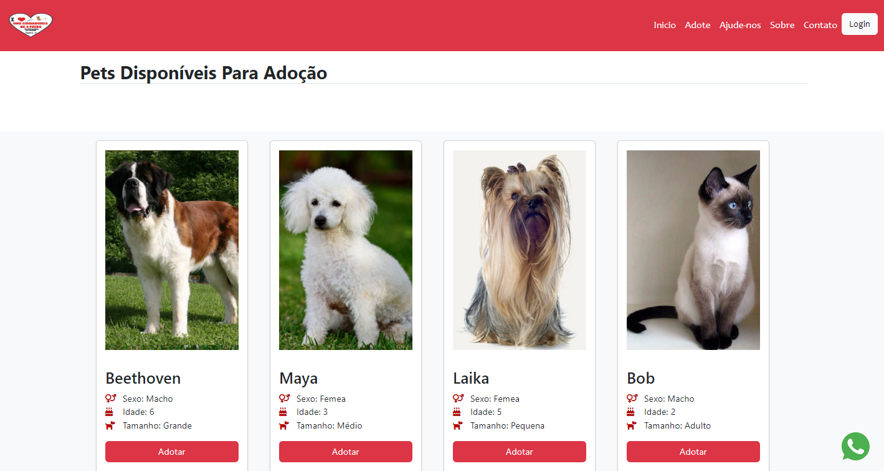
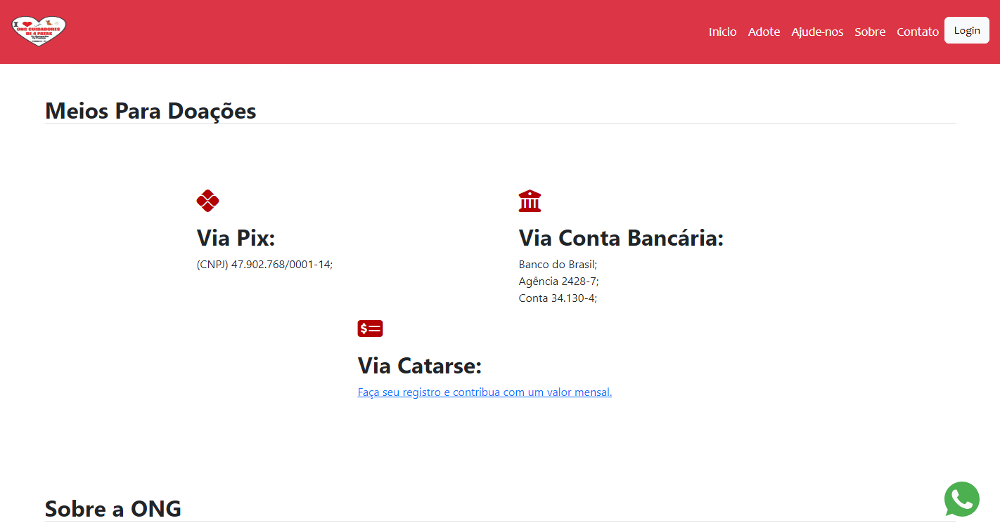
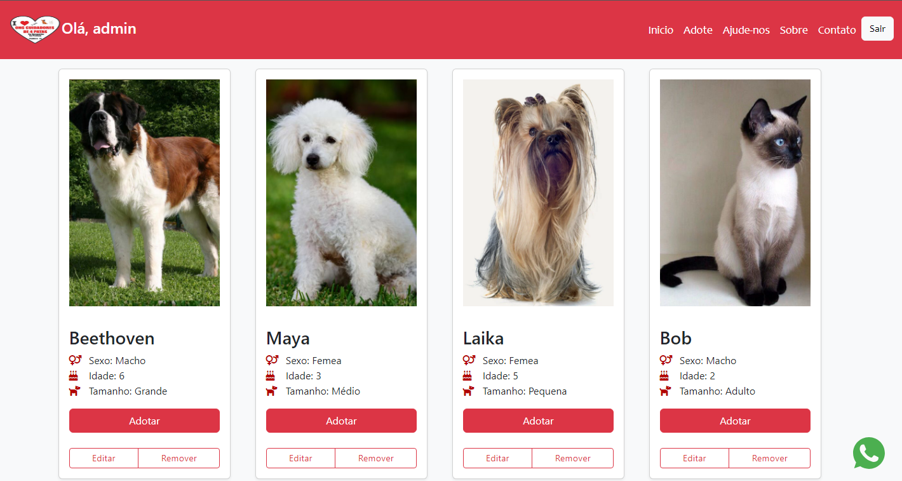

<Descrição/>
Website desenvolvido durante a disciplina de projeto integrador do curso de ADS. O objetivo foi criar uma solução com frontend e backend para gerenciar pets disponíveis para adoção em uma ONG, permitindo a criação de um ambiente mais específico para tais informações. O projeto conta com as operações CRUD (Create, Read, Update e Delete), separação de usuários (Comum e Administrador) e também com uma função para demonstrar interesse na adoção, enviando através de formulário os dados para o email de hospedagem.
<Tecnologias/>
<Screenshots/>
Preview
Video demonstração do website.
Início
Página de boas vindas do site contendo um slider com fotos informativas sobre a ONG.
Catalogo de pets
Seção com a listagem dos pets que estão disponíveis para adoção, com suas informações mais importantes.
Meios para ajudar
Área com opções para doar para a ONG e ajudar no trabalho voluntário.
Área administrativa
Perfil exclusivo para os voluntários da ONG realizarem as operações básicas de CRUD (Adicionar pets, Editar, Excluir).
